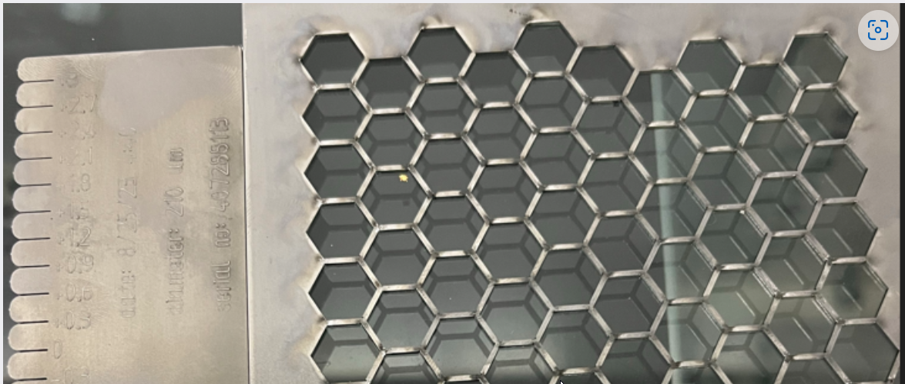

Special Processes
Securing cut parts in place
When laser cutting sheet metal, it may be necessary not to cut parts completely free, but to secure them to the sheet metal or the scrap skeleton.

Microjoint
Microjoints create small bridges between the part that has been cut free and the scrap skeleton.
Microjoints are created by switching the laser beam OFF for a certain period of time during the cutting process and then back on again. Meanwhile, the cutting head continues to follow the contour. Due to this interruption, a bridge with the entire sheet thickness remains on the contour path.
-
The process requires rework.
-
The process is suitable for thin to medium-thick sheets.
-
The process takes a certain amount of time.
Nanojoint
| The Nanojoint function requires a laser cutting unit with a power of ≥ 6 kW. |
Nanojoints specifically create small connections on the under side of the sheet between the cut part and the scrap skeleton. During the cutting process, the laser power is reduced by a certain value for a short period of time so that the sheet metal is not completely severed. After a defined period of time, the laser power is increased again and the cut is continued. This leaves a small connection between the cut part and the scrap skeleton on the underside of the sheet.
-
The process does not add time during the cutting process and therefore does not affect productivity.
-
Due to the small dimensions of a nanojoint, the parts can be easily removed or pulled out.
Laser cutting techniques
FlyLine
FlyLine cuts thin material at high speed without piercing. The laser pierces on the fly at constant speed, so the cutting time of thin sheet metal is noticeably reduced.
-
The process is suitable for thin sheets.
-
The process reduces cutting time and increases productivity.
-
The process has limited stability, so cutouts might stay stuck in the grid.
